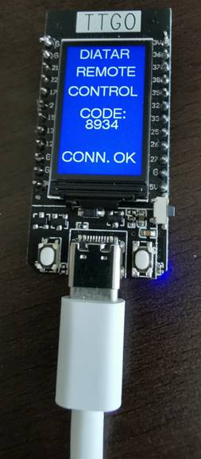
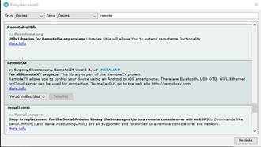
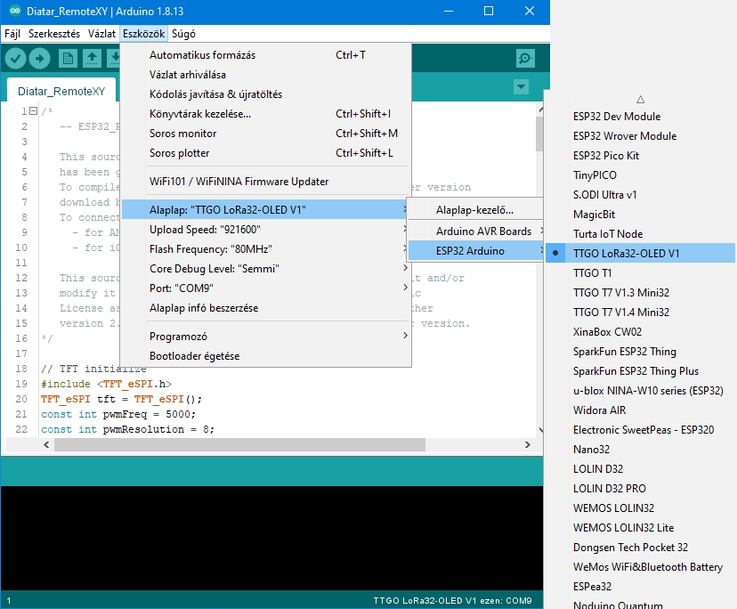
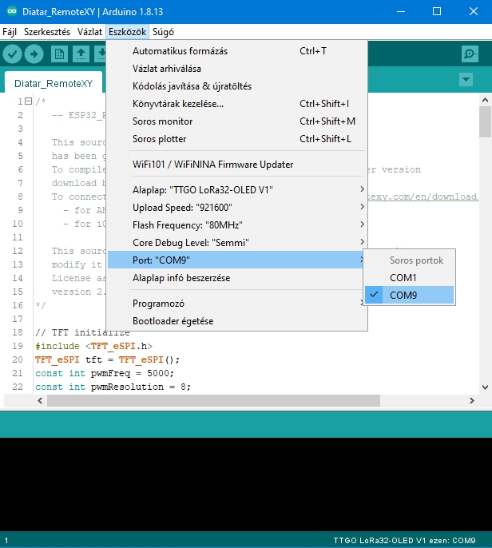

Windows-os Diatár bluetooth távvezérlése okostelefonról

Egy Arduino alapú mikrovezérlővel és egy ingyenesen használható okostelefonos alkalmazással sikerült megoldani,
hogy okostelefonról bluetooth kapcsolaton keresztül lehet vezérelni a Diatár programot.
Mindössze a RemoteXY alkalmazás ingyenes verzióját kell letölteni, mely megtalálható Android és IOS
eszközökre egyaránt.
RemoteXY Google Play
vagy
RemoteXY IOS
Szükséges hozzá egy ESP32 alapú
TTGO LoRa32-OLED
mikrovezérlő.
Ezt USB kábellel kell csatlakoztatni a PC-hez.
Arduino 1.8.13
fejlesztőkörnyezethez telepíteni kell a
RemoteXY 3.1.9
könyvtárat.
Az alaplap típusát ki kell választani, majd a soros portot is ki kell választani:



Szóval sok apró bosszúság és kisebb-nagyobb probléma miatt döntöttünk úgy, hogy projektoros vetítéssel próbálkozunk.
Pacor István barátom alakította ki a rendszert, üzemelte be a projektort, installálta a számítógépet, felszerelte a tartó-konzolt,
én pedig segítettem neki, de főleg a programot fejlesztettem.
Mivel a projektor kicsi, a diavetítőnél csöndesebb, nem zavarja a híveket. Az első pad szélére erősítettünk egy magas rúdon álló lapot,
arra helyeztük el a vetítőt. A szentély legszélére van a vászon állítva, így mindenhonnan jól látható, de kevéssé zavar.
Templomunk most volt száz éves, ennek tiszteletére alapos felújításon esett át. Jó lett volna a vezetékezést ennek keretében az
aljzatba rejteni. Sajnos azonban a vetítőt csak később tudtuk felszerelni, így egyelőre a jeleket továbbító RGB kábel a padok
tövében fut, azon a két rövid helyen pedig, ahol valaki ráléphetne, egy szőnyeggel letakart kábelcsatornában.
Folyamatosan keressük persze a lehetőséget, hogy ezt a kábelt megszûntessük.
Az első próbálkozás az
volt, hogy rádiófrekvenciás videojel-továbbítót üzemeltünk be. Sajnos ennek a képe igen gyenge volt, mert csak 640x480 pixeles
felbontású kompozit videojelet továbbít. Ezután döntöttünk az RGB kábel használata mellett. Féltünk, hogy zajos lesz a kép a hosszú
vezeték miatt, de kipróbáltuk, és akár 60m hosszú dróton is tûéles képet ad a projektor. Az egyetlen zavaró az volt, hogy ha a szöveg
nem töltötte ki a teljes képet, a projektor időnként elveszítette a szinkront, és esetleg képkockánként újraállította a felbontást.
Ezt a problémát azonban szoftveres úton sikerült megoldani.
A végleges megoldás talán az lesz, hogy egy számítógépet telepítünk az első padba (vagy mellé). Ekkor video-vetítéshez, gitáros miséhez,
lelkigyakorlatokhoz közvetlen innen lehet majd a projektort használni, nem csak a kórusról. Az ottani géppel WiFi (rádiófrekvenciás)
hálózaton kell majd az összeköttetést megoldani, és akkor nem lesz szükség a vezetékezésre. A program mindenesetre képes rá, csak az
elhatározásra van szükség...


Az orgona játszóasztalán kapott helyet a monitor, melyen a kántor követheti az énekrend alakulását. A billentyûzet és egér az orgonapad
jobboldalán, a sípház oldalára szerelt konzolra került, alá pedig a számítógép háza.
A hagyományos, diavetítős énekvetítésnek szokásos tartozéka az orgonista keze ügyében található léptető gombsor.
Ez a számítógép-billentyûzetnél sokkal praktikusabbnak bizonyult, ezért a kezdetektől fogva törekedtem ilyen távkapcsoló üzembeállítására.
Eleinte egy primitív kapcsolással a számítógép soros portjára csatlakozott néhány villanykapcsoló. Jól bevált, de otromba kinézetû volt,
és az igények növekedésének nem tudott megfelelni. Ekkor először párhuzamos (nyomtató) portra alakítottam át, de az igazi megoldást egy
kereskedelmi forgalomban kapható, PIC mikrovezérlőre alapozott, soros portra illeszkedő ki/bemeneti áramkör jelentette. Ennek segítségével
akár nyolc kapcsoló vagy nyomógomb jele fogadható, és visszajelző lámpák használatát is lehetővé teszi.
Ennek üzembehelyezésével
egy időben Ringhoffer Gergely orgonaépítő a villanykapcsolók helyett esztétikus
gombokat épített be a játszóasztal szabad felületébe. Jelenleg tehát öt
nyomógomb szolgálja a kántor igényeit: a vetítést bekapcsoló gomb fehéren
világít, ha a projektor vetít; az előre és hátra léptetés mellett a következő,
illetve előző énekre is közvetlenül (a további versszakok kihagyásával) lehet
ugrani.
Bátran állíthatom: a rendszer nagy megelégedésünkre szolgál, a gitárosok és a kántorok is örömmel használják, a számítógéphez értők
és a "fóbiások", fiatalok és nyugdíjasok egyaránt! Liszt Ferenc: Via Crucis címû keresztúti ciklusához is beírtuk a kórustételek
szövegét, hogy tudják a hívek, mit éneklünk éppen. Az elmélkedés közben pedig válogatott
keresztút-képeket vetítünk. Tavaly még filmvetítést is rendeztünk a projektor
segítségével.
Többen elkérték a
programot, szívesen adjuk – terjedjen minél szélesebb körben, a hívek és a
kántorok örömére! Ahogy egy atya találóan megjegyezte: "vatikáni valutában"
fizetnek érte, szerte az országban, sőt a határokon túl is használják.